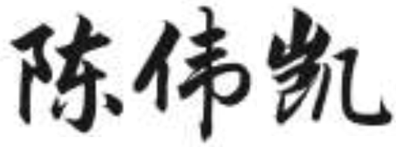
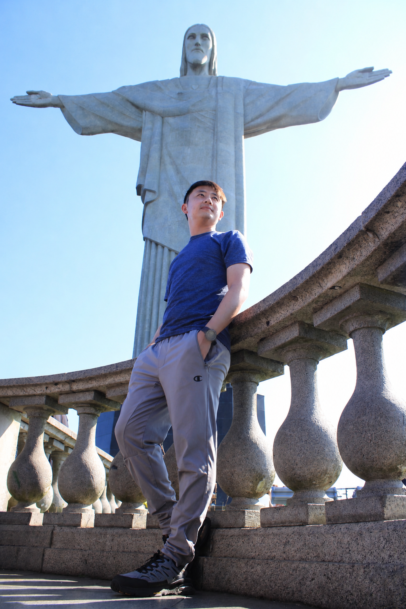

Weikai Chen


I am currently a Principal Research Scientist at LightSpeed Studios, Tencent America, where I lead research on multimodal world models and spatial intelligence. Previously, I was a postdoctoral researcher and later a research scientist at the Vision and Graphics Lab (VGL) at USC ICT, working with Prof. Hao Li. I received my Ph.D. from the University of Hong Kong in 2017, advised by Prof. Wenping Wang.My research lies at the intersection of computer vision, computer graphics, and machine learning. I am interested in multimodal foundation models, world models for simulation and interaction, and geometry-aware 3D representations. My work SoftRas has been adopted by PyTorch3D for its core differentiable rendering (check this out!).

News
-
04/2026: One paper accepted to SIGGRAPH 2026.
-
02/2026: Four papers accepted to CVPR 2026.
-
02/2026: I will serve on the Technical Papers Committee of SIGGRAPH Asia 2026.
-
01/2026: One paper accepted to ICLR 2026.
-
11/2025: One paper accepted to 3DV 2026.
-
09/2025: One paper accepted to NeurIPS 2025.
-
08/2025: Two papers accepted to SIGGRAPH Asia 2025.
-
05/2025: Two papers accepted to ICCV 2025.
-
04/2025: Gave an invited talk at China 3DV 2025.
-
03/2025: Two papers accepted to CVPR 2025.
-
07/2024: Two papers accepted to SIGGRAPH Asia 2024 (ACM TOG).
-
07/2024: One paper accepted to IEEE TVCG.
-
07/2024: One paper accepted to ECCV 2024.
-
02/2024: One paper accepted to CVPR 2024.
-
11/2023: One paper accepted to TPAMI.
-
07/2023: Two papers accepted to ICCV 2023.
-
02/2023: Four papers (including one highlight) accepted to CVPR 2023.
-
09/2022: Two papers accepted to NeurIPS 2022.
-
03/2022: Three papers (including one first-authored) accepted to CVPR 2022.
Selected Publications (Full List)
- project page
- paper
- code
-
abstract
Recent advancements in image-to-3D generation have made it possible to create a 3D mesh from a single image. However, the resulting meshes are typically over-tessellated, structurally disorganized, and difficult to edit. In this work, we address this issue by a task called structure-aware shape abstraction, which converts such meshes into a compact set of superquadrics for user-generated content (UGC) applications. The key challenges of this task are ensuring low primitive overlap, part-aware alignment, and compactness, all of which are critical for maintaining a clean, editable structure. To this end, we propose Light-SQ, a superquadric-based optimization framework consisting of three algorithmic innovations. First, we introduce SDF carving, which iteratively updates the target SDF to discourage overlapping primitives. Second, we propose a block-regrow-fill strategy guided by structure-aware volumetric decomposition to enable structural partitioning that drives primitive placement. Third, we apply adaptive residual pruning based on SDF update history to suppress over-segmentation and ensure compact results. Light-SQ also supports multiscale fitting for localized refinement to preserve fine geometric details. To evaluate our method, we introduce 3DGen-Prim, a new benchmark that extends 3DGen-Bench with metrics for both reconstruction quality and primitive-level editability. Experiments show that Light-SQ achieves efficient, high-fidelity shape abstraction well-suited for 3D UGC creation.
- paper
- project page
-
abstract
Single-image 3D generation has gained significant attention, with leading approaches typically relying on multi-view diffusion priors. However, these methods often suffer from inter-view inconsistencies and struggle to accurately represent complex internal structures. In this paper, we introduce a novel generative model, named SPGen, which encodes the geometry by projecting it onto a bounding sphere and unwrapping the sphere into multi-layer 2D Spherical Projection (SP) representation. SPGen operates entirely in the image domain, enabling it to leverage established 2D diffusion priors (e.g., Stable Diffusion). It offers three key advantages: (1) Consistency: The injective SP mapping inherently eliminates inter-view inconsistencies and ambiguity. (2) Flexibility: Multi-layer SP maps can effectively represent nested internal structures and support direct conversion into both watertight and open 3D surfaces. (3) Efficiency: Operating in the image domain allows for efficient fine-tuning with limited computational resources and achieves faster inference times than existing models. Extensive experiments demonstrate that SPGen significantly outperforms existing baselines in terms of geometric quality and computational efficiency.
- paper
-
abstract
Recent advances in diffusion models and neural implicit surfaces have shown promising progress in generating 3D models. However, existing generative frameworks are limited to closed surfaces, failing to cope with a wide range of commonly seen shapes that have open boundaries. In this work, we present DreamUDF, a novel framework for generating high-quality 3D objects with arbitrary topologies from a single image. To address the challenge of generating proper topology given sparse and ambiguous observations, we propose to incorporate both the data priors from a multi-view diffusion model and the geometry priors brought by an unsiged distance field (UDF) reconstructor. In particular, we leverage a joint framework that consists of 1) a generative module that produces a neural radiance field that provides photo-realistic renderings from the arbitrary view; and 2) a reconstructive module that distills the learnable radiance field into surfaces with arbitrary topologies. We further introduce a field coupler that bridges the radiance field and UDF under an novel optimization scheme. This allows the two modules to mutually boost each other during training. Extensive experiments and evaluations demonstrate that DreamUDF achieves high-quality reconstruction and robust 3D generation on both closed and open surfaces with arbitrary topologies, compared to the previous works.
- project page
- paper
- code
-
abstract
Multi-view shape reconstruction has achieved impressive progresses thanks to the latest advances in neural implicit rendering. However, existing methods based on signed distance function (SDF) are limited to closed surfaces, failing to reconstruct a wide range of real-world objects that contain open-surface structures. In this work, we introduce a new neural rendering framework, coded NeUDF, that can reconstruct surfaces with arbitrary topologies solely from multi-view supervision. To gain the flexibility of representing arbitrary surfaces, NeUDF leverages the unsigned distance function (UDF) as surface representation. While a naive extension of SDF-based neural renderer cannot scale to UDF, we propose two new formulations of weight function specially tailored for UDF-based volume rendering. Furthermore, to cope with open surface rendering, where the in/out test is no longer valid, we present a dedicated normal regularization strategy to resolve the surface orientation ambiguity. We extensively evaluate our method over a number of challenging datasets, including two typical open surface datasets MGN and Deep Fashion 3D. Experimental results demonstrate that NeUDF can significantly outperform the state-of-the-art methods in the task of multi-view surface reconstruction, especially for the complex shapes with open boundaries.
- project page
- paper
- code
- data
-
abstract
Recent progress in neural implicit functions has set new state-of-the-art in reconstructing high-fidelity 3D shapes from a collection of images. However, these approaches are limited to closed surfaces as they require the surface to be represented by a signed distance field. In this paper, we propose NeAT, a new neural rendering framework that can learn implicit surfaces with arbitrary topologies from multi-view images. In particular, NeAT represents the 3D surface as a level set of a signed distance function (SDF) with a validity branch for estimating the surface existence probability at the query positions. We also develop a novel neural volume rendering method, which uses SDF and validity to calculate the volume opacity and avoids rendering points with low validity. NeAT supports easy field-to-mesh conversion using the classic Marching Cubes algorithm. Extensive experiments on DTU, MGN, and Deep Fashion 3D datasets indicate that our approach is able to faithfully reconstruct both watertight and non-watertight surfaces. In particular, NeAT significantly outperforms the state-of-the-art methods in the task of open surface reconstruction both quantitatively and qualitatively.
- project page
- paper
- code
-
abstract
Recent advances in learning 3D shapes using neural implicit functions have achieved impressive results by breaking the previous barrier of resolution and diversity for varying topologies. However, most of such approaches are limited to closed surfaces as they require the space to be divided into inside and outside. More recent works based on unsigned distance function have been proposed to handle complex geometry containing both the open and closed surfaces. Nonetheless, as their direct outputs are point clouds, robustly obtaining high-quality meshing results from discrete points remains an open question. We present a novel learnable implicit representation, called three-pole signed distance function (3PSDF), that can represent non-watertight 3D shapes with arbitrary topologies while supporting easy field-to-mesh conversion using the classic Marching Cubes algorithm. The key to our method is the introduction of a new sign, the NULL sign, in addition to the conventional in and out labels. The existence of the null sign could stop the formation of a closed isosurface derived from the bisector of the in/out regions. Further, we propose a dedicated learning framework to effectively learn 3PSDF without worrying about the vanishing gradient due to the null labels. Experimental results show that our approach outperforms the previous state-of-the-art methods in a wide range of benchmarks both quantitatively and qualitatively.
- project page
- paper
- code
-
abstract
Recent advances in localized implicit functions have enabled neural implicit representation to be scalable to large scenes. However, the regular subdivision of 3D space employed by these approaches fails to take into account the sparsity of the surface occupancy and the varying granularities of geometric details. As a result, its memory footprint grows cubically with the input volume, leading to a prohibitive computational cost even at a moderately dense decomposition. In this work, we present a learnable hierarchical implicit representation for 3D surfaces, coded OctField, that allows high-precision encoding of intricate surfaces with low memory and computational budget. The key to our approach is an adaptive decomposition of 3D scenes that only distributes local implicit functions around the surface of interest. We achieve this goal by introducing a hierarchical octree structure to adaptively subdivide the 3D space according to the surface occupancy and the richness of part geometry. As octree is discrete and non-differentiable, we further propose a novel hierarchical network that models the subdivision of octree cells as a probabilistic process and recursively encodes and decodes both octree structure and surface geometry in a differentiable manner. We demonstrate the value of OctField for a range of shape modeling and reconstruction tasks, showing superiority over alternative approaches.
- project page
- paper
-
abstract
Many learning-based approaches have difficulty scaling to unseen data, as the generality of its learned prior is limited to the scale and variations of the training samples. This holds particularly true with 3D learning tasks, given the sparsity of 3D datasets available. We introduce a new learning framework for 3D modeling and reconstruction that greatly improves the generalization ability of a deep generator. Our approach strives to connect the good ends of both learning-based and optimization-based methods. In particular, unlike the common practice that fixes the pre-trained priors at test time, we propose to further optimize the learned prior and latent code according to the input physical measurements after the training. We show that the proposed strategy effectively breaks the barriers constrained by the pre-trained priors and could lead to high-quality adaptation to unseen data. We realize our framework using the implicit surface representation and validate the efficacy of our approach in a variety of challenging tasks that take highly sparse or collapsed observations as input. Experimental results show that our approach compares favorably with the state-of-the-art methods in terms of both generality and accuracy.
- project page
- paper
-
abstract
High-fidelity clothing reconstruction is the key to achieving photorealism in a wide range of applications including human digitization, virtual try-on, etc. Recent advances in learning-based approaches have accomplished unprecedented accuracy in recovering unclothed human shape and pose from single images, thanks to the availability of powerful statistical models, e.g. SMPL [38], learned from a large number of body scans. In contrast, modeling and recovering clothed human and 3D garments remains notoriously difficult, mostly due to the lack of large-scale clothing models available for the research community. We propose to fill this gap by introducing Deep Fashion3D, the largest collection to date of 3D garment models, with the goal of establishing a novel benchmark and dataset for the evaluation of image-based garment reconstruction systems. Deep Fashion3D contains 2078 models reconstructed from real garments, which covers 10 different categories and 563 garment instances. It provides rich annotations including 3D feature lines, 3D body pose and the corresponded multi-view real images. In addition, each garment is randomly posed to enhance the variety of real clothing deformations. To demonstrate the advantage of Deep Fashion3D, we propose a novel baseline approach for single-view garment reconstruction, which leverages the merits of both mesh and implicit representations. A novel adaptable template is proposed to enable the learning of all types of clothing in a single network. Extensive experiments have been conducted on the proposed dataset to verify its significance and usefulness. We will make Deep Fashion3D publicly available upon publication
- paper
-
abstract
Recent advances in 3D deep learning have shown that it is possible to train highly effective deep models for 3D shape generation, directly from 2D images. This is particularly interesting since the availability of 3D models is still limited compared to the massive amount of accessible 2D images, which is invaluable for training. The representation of 3D surfaces itself is a key factor for the quality and resolution of the 3D output. While explicit representations, such as point clouds and voxels, can span a wide range of shape variations, their resolutions are often limited. Mesh-based representations are more efficient but are limited by their ability to handle varying topologies. Implicit surfaces, however, can robustly handle complex shapes, topologies, and also provide flexible resolution control. We address the fundamental problem of learning implicit surfaces for shape inference without the need of 3D supervision. Despite their advantages, it remains nontrivial to (1) formulate a differentiable connection between implicit surfaces and their 2D renderings, which is needed for image-based supervision; and (2) ensure precise geometric properties and control, such as local smoothness. In particular, sampling implicit surfaces densely is also known to be a computationally demanding and very slow operation. To this end, we propose a novel ray-based field probing technique for efficient image-to-field supervision, as well as a general geometric regularizer for implicit surfaces, which provides natural shape priors in unconstrained regions. We demonstrate the effectiveness of our framework on the task of single-view image-based 3D shape digitization and show how we outperform state-of-the-art techniques both quantitatively and qualitatively.
- paper
- code
- old version
-
abstract
Rendering bridges the gap between 2D vision and 3D scenes by simulating the physical process of image formation. By inverting such renderer, one can think of a learning approach to infer 3D information from 2D images. However, standard graphics renderers involve a fundamental discretization step called rasterization, which prevents the rendering process to be differentiable, hence able to be learned. Unlike the state-of-the-art differentiable renderers, which only approximate the rendering gradient in the back propagation, we propose a truly differentiable rendering framework that is able to (1) directly render colorized mesh using differentiable functions and (2) back-propagate efficient supervision signals to mesh vertices and their attributes from various forms of image representations, including silhouette, shading and color images. The key to our framework is a novel formulation that views rendering as an aggregation function that fuses the probabilistic contributions of all mesh triangles with respect to the rendered pixels. Such formulation enables our framework to flow gradients to the occluded and far-range vertices, which cannot be achieved by the previous state-of-the-arts. We show that by using the proposed renderer, one can achieve significant improvement in 3D unsupervised single-view reconstruction both qualitatively and quantitatively. Experiments also demonstrate that our approach is able to handle the challenging tasks in image-based shape fitting, which remain nontrivial to existing differentiable renderers.
- paper
-
abstract
Reconstructing the 3D mesh of a general object from a single image is now possible thanks to the latest advances of deep learning technologies. However, due to the nontrivial difficulty of generating a feasible mesh structure, the state-of-the-art approaches~\cite{wang2018pixel2mesh,kanazawa2018learning} often simplify the problem by learning the displacements of a template mesh that deforms it to the target surface.Though reconstructing a 3D shape with complex topo logy can be achieved by deforming multiple mesh patches, it remains difficult to stitch the results to ensure a high meshing quality. In this paper, we present an end-to-end single-view mesh reconstruction framework that is able to generate high-quality meshes with complex topology from a single genus-0 template mesh. The key to our approach is a novel progressive shaping framework that alternates between shape deformation and topology modifying. While a deformation network predicts the per-vertex translations that reduce the gap between the reconstructed mesh and the ground truth, a novel topology modification network is employed to prune the error-prone faces and refine the boundary conditions, enabling the evolution of topology. By iterating over the two procedures, one can progressively modify the mesh topology while achieving higher reconstruction accuracy. Extensive experiments demonstrate that our approach significantly outperforms the current state-of-the-art methods both qualitatively and quantitatively, especially for the shapes with complex topology. - paper
-
abstract
We introduce a new silhouette-based representation for modeling clothed human bodies using deep generative models. Our method can reconstruct a complete and textured 3D model of a person wearing clothes from a single input picture. Inspired by the visual hull algorithm, our implicit representation uses 2D silhouettes and 3D joints of a body pose to describe the immense shape complexity and variations of clothed people. Given a segmented 2D silhouette of a person and its inferred 3D joints from the input picture, we first synthesize consistent silhouettes from novel view points around the subject. The synthesized silhouettes, which are the most consistent with the input segmentation are fed into a deep visual hull algorithm for robust 3D shape prediction. We then infer the texture of the subject's back view using the frontal image and segmentation mask as input to a conditional generative adversarial network. Our experiments demonstrate that our silhouette-based model is an effective representation and the appearance of the back view can be predicted reliably using an image-to-image translation network. While classic methods based on parametric models often fail for single-view images of subjects with challenging clothing, our approach can still produce successful results, which are comparable to those obtained from multi-view input.
- paper
- video
-
abstract
We present a deep learning based volumetric approach for performance capture using a passive and highly sparse multi-view capture system. State-of-the-art performance capture systems require either pre-scanned actors, large number of cameras or active sensors. In this work, we focus on the task of template-free, per-frame 3D surface reconstruction from as few as three RGB sensors, for which conventional visual hull or multi-view stereo methods fail to generate plausible results.We introduce a novel multi-view Convolutional Neural Network (CNN) that maps 2D images to a 3D volumetric field and we use this field to encode the probabilistic distribution of surface points of the captured subject. By querying the resulting field, we can instantiate the clothed human body at arbitrary resolutions. Our approach scales to different numbers of input images, which yield increased reconstruction quality when more views are used. Although only trained on synthetic data, our network can generalize to handle real footage from body performance capture. Our method is suitable for high-quality low-cost full body volumetric capture solutions, which are gaining popularity for VR and AR content creation. Experimental results demonstrate that our method is significantly more robust and accurate than existing techniques when only very sparse views are available.
- suppl.
- paper
- video
-
abstract
We present a deep learning-based technique to infer high-quality facial reflectance and geometry given a single unconstrained image of the subject, which may contain partial occlusions and arbitrary illumination conditions. The reconstructed high-resolution textures, which are generated in only a few seconds, include high-resolution skin surface reflectance maps, representing both the diffuse and specular albedo, and medium- and highfrequency displacement maps, thereby allowing us to render compelling digital avatars under novel lighting conditions. To extract this data, we train our deep neural networks with a high-quality skin reflectance and geometry database created with a state-of-the-art multi-view photometric stereo system using polarized gradient illumination. Given the raw facial texture map extracted from the input image, our neural networks synthesize complete reflectance and displacement maps, as well as complete missing regions caused by occlusions. The completed textures exhibit consistent quality throughout the face due to our network architecture, which propagates texture features from the visible region, resulting in high-fidelity details that are consistent with those seen in visible regions. We describe how this highly underconstrained problem is made tractable by dividing the full inference into smaller tasks, which are addressed by dedicated neural networks. We demonstrate the effectiveness of our network design with robust texture completion from images of faces that are largely occluded. With the inferred reflectance and geometry data, we demonstrate the rendering of high-fidelity 3D avatars from a variety of subjects captured under different lighting conditions. In addition, we perform evaluations demonstrating that our method can infer plausible facial reflectance and geometric details comparable to those obtained from high-end capture devices, and outperform alternative approaches that require only a single unconstrained input image.
- suppl.

Li Jin*, Weikai Chen*, Yujie Wang, Yingda Yin, Zeyu Hu, Runze Zhang, Keyang Luo, Shengju Qian, Xin Wang, Xueying Qin
CVPR 2026 (Oral Presentation)
"canonical space perception for open-world promptable 3D semantic part segmentation"
Zhijia Liang, Jiaming Li, Weikai Chen, Yanhao Zhang, Haonan Lu, Guanbin Li
CVPR 2026
"structured on-demand retrieval for streaming video reasoning with bounded token cost"

Jingzhi Bao, Hongze Chen, Lingting Zhu, Chenyu Liu, Runze Zhang, Keyang Luo, Zeyu Hu, Weikai Chen, Yingda Yin, Xin Wang, Zehong Lin, Jun Zhang, Xiaoguang Han
ICLR 2026
"an end-to-end framework for high-fidelity PBR texture generation with illumination context"
Yuhan Wang, Weikai Chen#, Zhihao Hu, Rui Zhang, Yiqun Yin, Rui Wu, Kanle Luo, Siyu Qian, Yuming Ma, Hao Li, Wenping Wang
SIGGRAPH Asia 2025
"converting AI-generated meshes into compact, editable primitive-based representations"
Junyu Zhang, Weikai Chen, Yang Liu, Jian Wang, Zhengyu Yu, Ziqian Shen, Bo Yang, Wenping Wang, Xiaofei Li
SIGGRAPH Asia 2025
"a novel representation for single-image 3D generation with better consistency and flexibility"
Yu-Tao Liu, Xuan Gao, Weikai Chen, Jie Yang, Xiaoxu Meng, Bo Yang, Lin Gao
SIGGRAPH Asia 2024 (ACM Transactions on Graphics)
"a 3D generative model that can generate shapes with arbitrary topologies, including open surfaces"
Yu-Tao Liu, Li Wang, Jie Yang, Weikai Chen, Xiaoxu Meng, Bo Yang, Lin Gao
CVPR 2023
"NeuS for unsigned distance field"
Xiaoxu Meng, Weikai Chen, Bo Yang
CVPR 2023
"NeuS for 3-Pole signed distance field (3PSDF)"
Weikai Chen, Cheng Lin, Weiyang Li, Bo Yang
CVPR 2022
"a new implicit representation that can represent non-watertight shapes"
Jia-Heng Tang*, Weikai Chen*, Jie Yang, Bo Wang, Songrun Liu, Bo Yang, Lin Gao
NeurIPS 2021
"a new hierarchical implicit representation with its generative model for high-precision modeling with low cost"
Mingyue Yang, Yuxin Wen, Weikai Chen, Yongwei Chen, Kui Jia
CVPR 2021
"a framework to improve the performance and generality of 3D shape prior"
Heming Zhu, Yu Cao, Hang Jin, Weikai Chen, Dong Du, Zhangye Wang, Shuguang Cui, and Xiaoguang Han
ECCV 2020 (Oral Presentation)
"a large scale dataset and benchmark for real 3D garments"
Shichen Liu, Shunsuke Saito, Weikai Chen, Hao Li
NeurIPS 2019
"the first differentiable renderer for implicit field"
Shichen Liu, Tianye Li, Weikai Chen, Hao Li
ICCV 2019 (Oral Presentation) — Adopted by PyTorch3D as the core differentiable rendering algorithm
"a truly differentiable renderer for rasterization-based rendering"
Junyi Pan, Xiaoguang Han, Weikai Chen, Jiapeng Tang and Kui Jia
ICCV 2019
"a single-view mesh reconstruction approach that can handle objects with arbitrary topologies"
Ryota Natsume, Shunsuke Saito, Zeng Huang, Weikai Chen, Chongyang Ma, Hao Li, Shigeo Morishima
CVPR 2019 (Oral Presentation) - Best Paper Finalists
"single-view based clothed human reconstruction"
Zeng Huang, Tianye Li, Weikai Chen, Yajie Zhao, Jun Xing, Chloe LeGendre, Linjie Luo, Chongyang Ma, Hao Li
ECCV 2018
"volumetric body reconstruction from highly sparse views"
Shugo Yamaguchi*, Shunsuke Saito*, Koki Nagano, Yajie Zhao, Weikai Chen, Shigeo Morishima, Hao Li
SIGGRAPH 2018
"inference of complete face reflectance maps from a single unconstrained image"